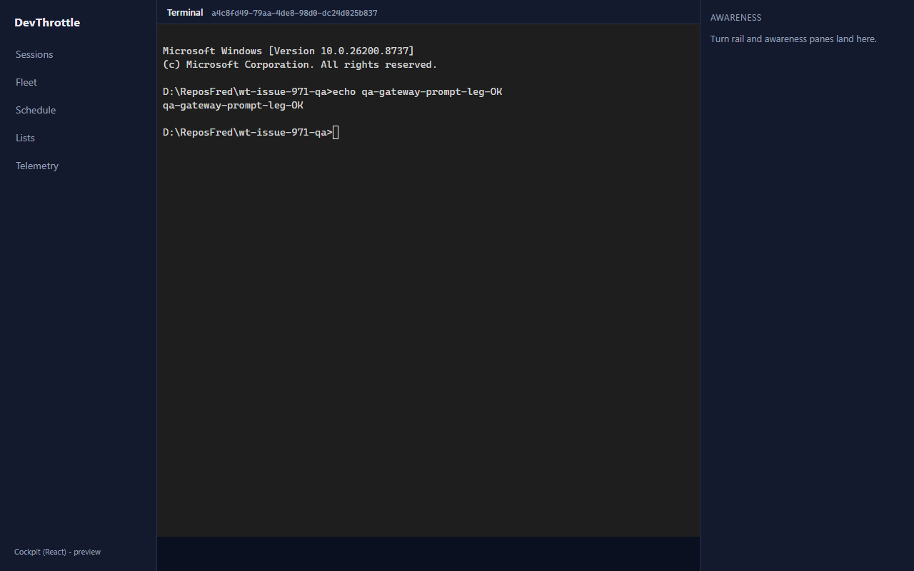
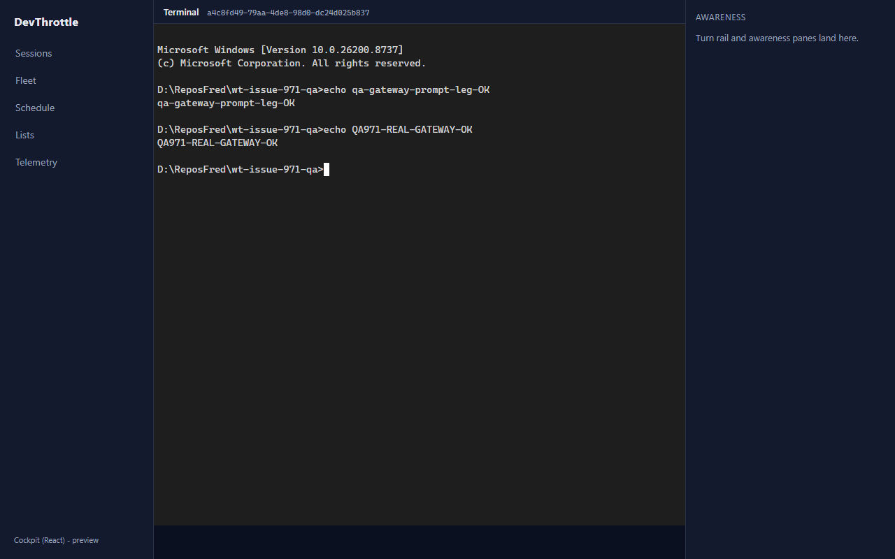
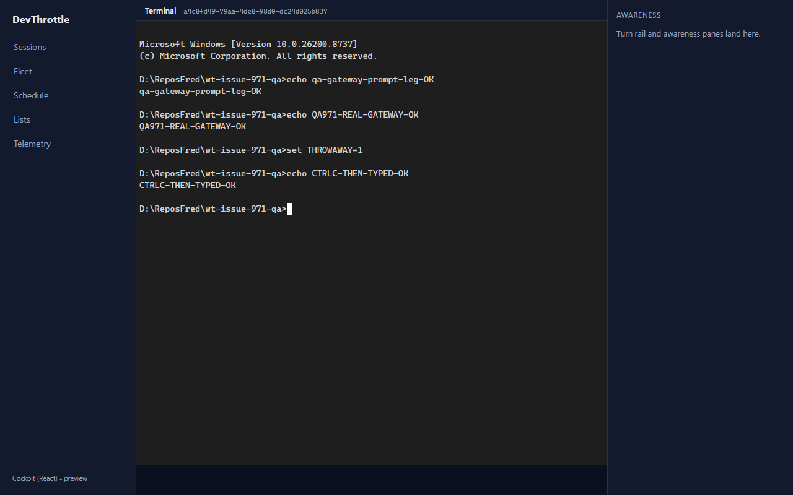
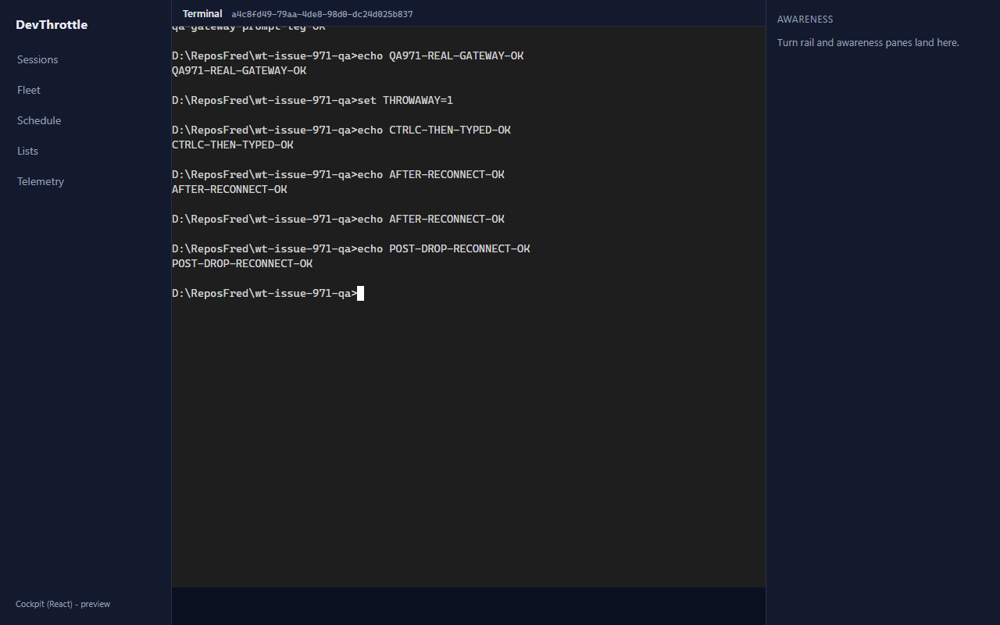

Issue #971 - QA independent verification
QA Agent (CenCon). Independently reproduced in the running app - NOT trusting the
Developer report. Branch issue-971-cockpit-terminal, PR #992.
Why this run matters (the scrutiny point)
The Developer proof drove the terminal through a Vite dev-server proxy standing in for the
Gateway. QA re-verified the REAL runtime path: the React
/c bundle served by an actual PR-built CcDirector.Gateway, which
reverse-proxies the WebSocket upgrade to the owning Director and forwards keystroke REST calls.
QA test topology (all isolated, per CLAUDE.md rule 0b / issue #299)
- Test Director: own slot 15, built from the PR branch in an isolated worktree,
launched via the
cc-director15-launchscheduled task. Control API127.0.0.1:7880. Hosts a realRawCli cmd.exePTY sessiona4c8fd49-79aa-4de8-98d0-dc24d025b837. - Real Gateway:
CcDirector.Gatewaybuilt from the PR branch with-p:BuildCockpit=true(so the MSBuildBuildCockpitApptarget staged the React bundle intowwwroot/c), run on127.0.0.1:7899(CC_GATEWAY_NO_AUTH=1, since a plain browser holds no device-key cookie). It discovered both local Directors and aggregated the test session. - Browser: headless Chromium (Playwright) opened
http://127.0.0.1:7899/c/session/<sid>.
Proof the WS was proxied to the owning Director: the browser's only stream socket was
same-origin ws://127.0.0.1:7899/sessions/<sid>/stream, yet the live
cmd.exe PTY bytes (which exist only on the test Director at :7880) rendered in the
page - the Gateway resolved the owning Director and reverse-proxied the upgrade. Keystrokes were
observed proxied at the Gateway then executed on the Director
([ControlEndpoints] POST prompt OK in the Director log).
Acceptance criteria - independently verified
| Criterion | Expected | Actual (via the REAL Gateway) | Result |
|---|---|---|---|
| Renders coherently (no ghost-stacked frames) and stays current. | Live PTY grid mirrored exactly; no stacked/ghost footer lines. | The cmd.exe banner + every prompt/echo rendered crisply and linearly across
many commands and 6 stream-reconnect cycles - no ghosting, no desync
(qa-01, qa-03, qa-10). |
PASS |
| Typing works end to end, incl. control keys and the slash-command interface. | Every keystroke reaches the PTY via POST /sessions/{sid}/prompt appendEnter:false;
control keys as raw VT bytes. |
90+ keystroke POSTs, every one appendEnter:false;
echo QA971-REAL-GATEWAY-OK executed in the real PTY. Control keys forwarded as
raw bytes: Ctrl+C=\x03, Esc=\x1b, ArrowUp=\x1b[A,
ArrowDown=\x1b[B, Enter=\r. The slash-command interface rides the
identical per-character path (every typed char, including /, forwards verbatim);
a Claude slash-menu is not shown here only because the deterministic PTY is cmd.exe
(the issue's own suggested repro) - the transport under test is proven (qa-02, qa-03, qa-04). |
PASS |
| Dropping and restoring reconnects the stream and does not lose the ability to type. | A dropped stream socket reconnects same-origin; typing works after restore. | The live WebSocket was genuinely closed at the client; a new same-origin WS opened
through the real Gateway (socket count climbed 1 -> 2 -> ... -> 6 across repeated
drops), the terminal recovered coherently, and
echo POST-DROP-RECONNECT-OK then typed AND executed in the PTY
(qa-09, qa-10; qa-reconnect-results.json). The bounded-reconnect visible status
line + give-up-after-30 behavior is additionally asserted deterministically by the 9 unit
tests. |
PASS |
| No absolute URLs in the client (lint rule passes). | npm run lint 0 errors; no absolute http/https/ws/wss literal. |
npm run lint = 0 errors. QA also proved the rule has teeth: injecting
wss://some-director... into interactive.ts made lint fail with the
Gateway-only-ingress error (then reverted). In the live browser the only stream URL was
same-origin ws://127.0.0.1:7899/... and every keystroke POST was root-relative
/sessions/.../prompt. |
PASS |
Method / regression checks
npm run typecheck (client-core + cockpit + mobile) -> clean
npm run test --workspace @devthrottle/client-core -> 58 passed (9 new, InteractiveTerminal)
npm run build --workspace @devthrottle/cockpit -> tsc + vite build succeeded
npm run lint (Gateway-only-ingress) -> 0 errors (rule proven to fail on an injected absolute URL)
Live browser console -> 0 errors
CenCon -> no architecture/security drift: reuses existing Gateway
endpoints (/stream, /prompt), no new ingress, no new secret.
Screenshots (QA's own, via the real Gateway)

/c; the
interactive terminal streaming the live cmd.exe PTY over the same-origin WebSocket.
echo QA971-REAL-GATEWAY-OK typed keystroke-by-keystroke
(appendEnter:false) and executed by the real PTY.
\x03) cancelled the in-progress line; typing continued
and echo CTRLC-THEN-TYPED-OK executed.
echo POST-DROP-RECONNECT-OK (typed after a drop) executed.VERIFIED - all 4 acceptance criteria met. Independently reproduced against a real PR-built Gateway reverse-proxying to an isolated test Director PTY - not a dev-proxy stand-in.